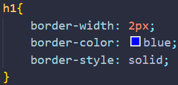
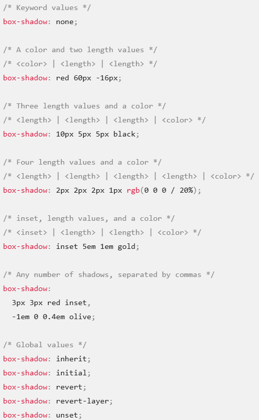

The Box Model
Index
- Border
- Border width, height & percentage
- Border style
- Padding
- Margin
- Standard box model
- Alternative box model
- Display property
- Block
- Inline
- Inline-block
- Display-none
- Min & Max width
- Border radius
- Box shadow
- Overflow
Border

The border shorthand CSS property sets an element's border. It sets the values of border-width, border-style, and border-color.
Border width, height & percentage
p - absolute
% - relative
Border style
- border-style: none;
- border-style: hidden;
- border-style: dotted;
- border-style: dashed;
- border-style: solid;
- border-style: double;
- border-style: groove;
- border-style: ridge;
- border-style: inset;
- border-style: outset;
Padding
- padding-top: 10px;
- padding-right: 10px;
- padding-bottom: 10px;
- padding-left: 10px;
- padding: 20px; - all sides
- padding: 5px 10px 15px 20px;
- padding: 10px 20px; - top & bottom | left & right
- padding 10px 20px 10px; - top | left & right | bottom
Margin
Same as padding.
margin: 20px auto; - browser will centre on the horizontal
Standard box model
In the standard box model, if you set width and height property values on a box, these values define the width and height of the content box. Any padding and borders are then added to those dimensions to get the total size taken up by the box (see the image below).
The actual space taken up by the box will be 410px wide (350 + 25 + 25 + 5 + 5) and 210px high (150 + 25 + 25 + 5 + 5).
Alternative box model
In the alternative box model, any width is the width of the visible box on the page. The content area width is that width minus the width for the padding and border (see image below). No need to add up the border and padding to get the real size of the box.
To turn on the alternative model for an element, set box-sizing: border-box on it:
Now, the actual space taken up by the box will be 350px in the inline direction and 150px in the block direction.
Display property
Block
- Breaks onto a new line
- Width and height are respected
- Padding, margin, and border cause other elements to be pushed away from the box
- The box extends in the inline direction to fill available space in container (unless styled otherwise)
Inline
- Box does not break onto a new line
- Width and height do not apply
- Vertical padding, margin, and borders apply but do not cause other inline elements to move away from the box
- Horizontal padding, margin, and border will apply and cause other boxes to move away
Inline-block
- Hybrid of inline and block
- box does not break onto new line
- Width and height are respected
- Padding, margin, and border will cause other elements to be pushed away from the box
Display-none
- display: none; is commonly used with JavaScript to hide and show elements without deleting and recreating them.
- Turns off the display of an element so that it has no effect on layout (the document is rendered as though the element did not exist)
- All descendant elements also have their display turned off.
Min & Max width
The box will be 80% of its container, but will not get wider than 500px, or narrower than 300px.
Border radius
Link to mdn web docs - border-radius
Order:
- border-top-left-radius
- border-top-right-radius
- border-bottom-right-radius
- border-bottom-left-radius
Border radius examples:
Box shadow
The box-shadow CSS property adds shadow effects around an element's frame. You can set multiple effects separated by commas. A box shadow is described by X and Y offsets relative to the element, blur and spread radius, and color.

Overflow
The overflow CSS shorthand property sets the desired behavior when content does not fit in the element's padding box (overflows) in the horizontal and/or vertical direction.